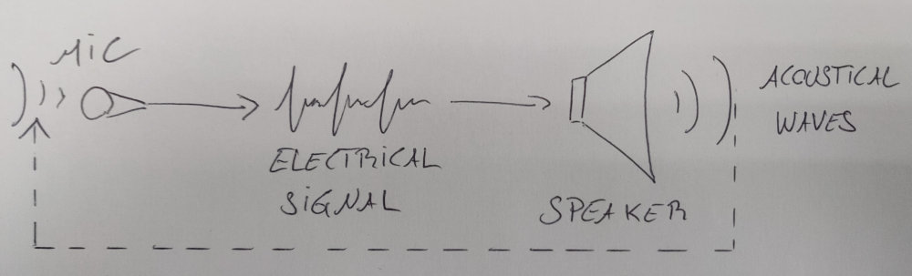
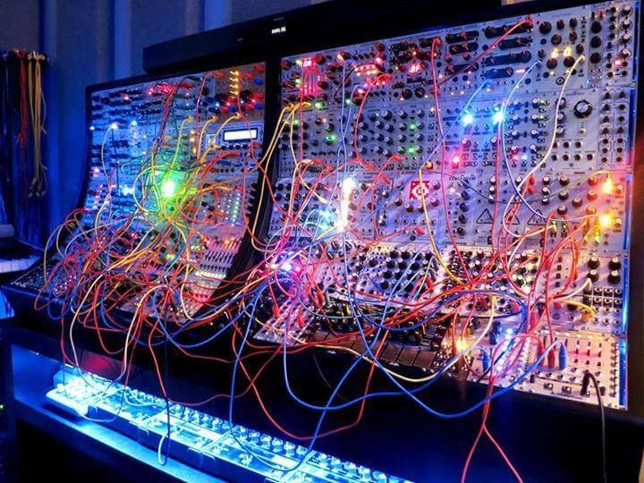

Audio Signal Processing Fundamentals slide version
The goal of this lecture is to provide an overview of the basics of digital audio.
Analog Audio Signals
Before the advent of digital audio, most audio systems/technologies were analog. An analog audio signal can take different forms: it can be electric (e.g., transmitted through an electric wire and stored on a magnetic tape) or mechanical (e.g., transmitted through the air as standing waves and stored on a vinyl disc). Acoustical mechanical waves can be converted into an electric signal using a microphone. Conversely, an electric audio signal can be converted into mechanical acoustical waves using a speaker.

In nature, sounds almost always originate from a mechanical source. However, in the 20th century, many musicians, composers and engineers experimented with the production of sound from an electrical source. One of the pioneer in this field was Karlheinz Stockhausen. This lead to analog and modular synthesizers which are very popular among Croix-Roussian hipsters these days.

The Discovery of Digital Audio
Sampling theory dates back from the beginning of the 20th century with initial work by Harry Nyquist and was theorized in the 1930s by Claude Shannon to become the Nyquist-Shannon sampling theorem.
Carrying sampling in the field of audio is relatively simple: voltage measurements are carried out at regular intervals of time on an analog electrical signal. Each individual acquired value is called a "sample" and can be stored on a computer. Hence, while an analog electric audio signal is a variation of tension in time in an electric cable, a digital audio signal is just series of samples (values) in time as well.

ADC and DAC
In the field of audio, an ADC (Analog to Digital Converter) is a hardware component that can be used to discretize (sample) an electrical analog audio signal. The reverse operation is carried out using a DAC (Digital to Analog Converter). In most systems, the ADC and the DAC are hosted in the same piece of hardware (e.g., audio codec, audio interface, etc.).
Human Hearing Range and Sampling Rate
One of the main factor to consider when sampling an audio signal is the human hearing range. In theory, humans can hear any sound between 20 and 20000 Hz. In practice, our ability to perceive high frequencies decays over time and is affected by environmental factors (e.g., if we're exposed to sound with high volume, if we contract some diseases such as hear infections, etc.). By the age of 30, most adults can't hear frequencies over 17 kHz.
When sampling an audio signal, the number of samples per second also known as the sampling rate (noted ) will determine the highest frequency than can be sampled by the system. The rule is very simple: the highest frequency that can be sampled is half the sampling rate. Hence, in order to sample a frequency of 20 kHz, the sampling rate of the system must be at least 40 kHz which corresponds to 40000 values (samples) per second. The highest frequency that can be sampled is also known as the "Nyquist Frequency" ():
The standard for modern audio systems is to use a sampling rate of 48 kHz. is 44.1 kHz on compact discs (CDs) and many home and recording studios use a sampling rate of 96 or 192 kHz.
Sampling Theorem
Let denote any continuous-time signal having a continuous Fourier transform:
Let
denote the samples of at uniform intervals of seconds. Then can be exactly reconstructed from its samples if for all .
In other words, any frequency (harmonics) between 0 Hz and the Nyquist frequency can be exactly reconstructed without loosing any information. That also means that if the Nyquist frequency is above the upper threshold of the human hearing range (e.g., 20 kHz), a digitized signal should sound exactly the same as its analog counterpart from a perceptual standpoint.
Additional proofs about the sampling theorem can be found on Julius Smith's website here.
Aliasing
Aliasing is a well known phenomenon in the field of video:
In audio, aliasing happens when a digital signal contains frequencies above the Nyquist frequency. In that case, they are not sampled at the right frequency and they are wrapped. Hence, for all frequency above , the sampled frequency will be:
with
Aliasing is typically prevented by filtering an analog signal before it is discretized by removing all frequency above . Aliasing can also be obtained when synthesizing a broadband signal on a computer (e.g., a sawtooth wave). It is the software engineer's role to prevent this from happening.
Bit Depth, Dynamic Range and Signal-to-Noise Ratio
Beside sampling rate, the other parameter of sampling is the bit depth of audio samples. Audio is typically recorded at 8, 16 (the standard for CDs), or 24 bits (and 32 bits in some rarer cases). A higher bit depth means a more accurate precision for a given audio sample. This impacts directly the dynamic range and the signal-to-noise (SNR) ratio of a digital signal. In other words, a smaller bit depth will mean more noise in the signal, etc. Additional information about this topic can be found here.
Range of Audio Samples
Audio samples can be coded in many different ways depending on the context. Some low-level systems use fixed-point numbers (i.e., integers) for efficiency. In that case, the range of the signal will be determined by the data type. For example, if audio samples are coded on 16 bits unsigned integers, the range of the signal will be 0 to (or 65535). At the hardware level (e.g., ADC/DAC), audio samples are almost exclusively coded on integers.
On the other hand, fixed points are relatively hard to deal with at the software level when it comes to implementing DSP algorithms. In that case, it is much more convenient to use decimal numbers (i.e., floating points). The established standard in audio is that audio signals coded on decimal numbers always have the following range: {-1;1}. While this range can be exceeded within an algorithm without any consequences, the inputs and outputs of a DSP block must always be constrained between -1 and 1. Most systems will clip audio signals to this range to prevent warping and will hence result in clipping if exceeded.
First Synthesized Sound on a Digital Computer
While Shanon and Nyquist theorized sampling in the 1930s, it's only in 1958 that a sound was synthesized for the first time on a computer by Max Mathews at Bell Labs, giving birth a few years later to the first song synthesized (and sung) by a computer:
This was by the way reused by Stanley Kubrick in one of his famous movie as HAL the computer is slowly dying as it's being unplugged:
These technologies were then extensively exploited until today both for musical applications and in the industry at large.